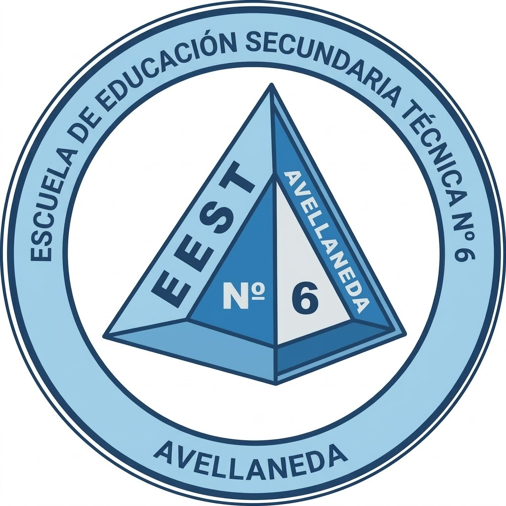

La Escuela de Educación Secundaria Técnica N°6 de Avellaneda forma estudiantes con conocimientos científicos, tecnológicos y prácticos que les permiten insertarse en el mundo laboral o continuar estudios superiores.
Perfil: Formación en sistemas mecánicos, eléctricos, neumáticos e hidráulicos.
Salida laboral: Industrias, mantenimiento industrial, diseño CAD y operación de maquinaria.
Talleres: Ajuste, Herrería, Tornería y Electricidad Industrial.
Contenidos: Instalaciones domiciliarias e industriales, tableros eléctricos, control de motores y energías renovables.
Competencia: Proyectos de instalaciones eléctricas seguras bajo normativas vigentes.
Perfil: Gestión de empresas, contabilidad, recursos humanos y marketing.
Herramientas: Software contable, Excel avanzado y gestión administrativa.
Formación general donde todos los estudiantes pasan por los mismos talleres para adquirir herramientas técnicas básicas.
Los alumnos eligen una orientación y se especializan en su área.
Los estudiantes realizan proyectos o pasantías para aplicar lo aprendido en el mundo real.
Dirección: Avellaneda, Buenos Aires
Teléfono: —
Email: —